说明：画布 - 作业优先级
一、背景
-
在作业异常告警运营的时候，往往需要研发同学判断处理作业的顺序。为提升告警运营效率，辅助研发同学判断，需要新增标志位来判定处理的优先级
二、名称解释
优先级：将作业分为S、A、B三级，研发同学将以不同的队列资源以及响应速度维护各级作业
S: 稳定队列资源，适用于核心任务
A: 普通队列资源，适用于非核心任务以及核心任务缓冲期
B: 测试队列资源，适用于测试任务
三、整体概览
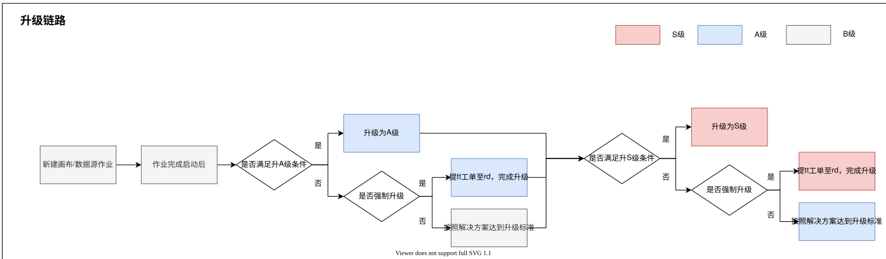
四、操作说明
4.1 如何给作业升级
原则：待数据源作业就绪/画布作业运行后并且满足升级条件，才可进行升级
|
说明 |
示例图 |
|
|---|---|---|
|
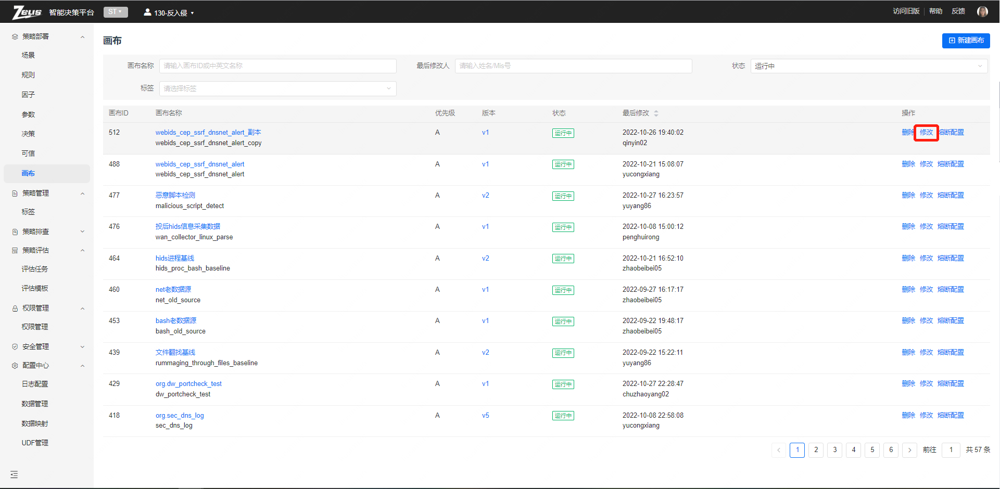 |
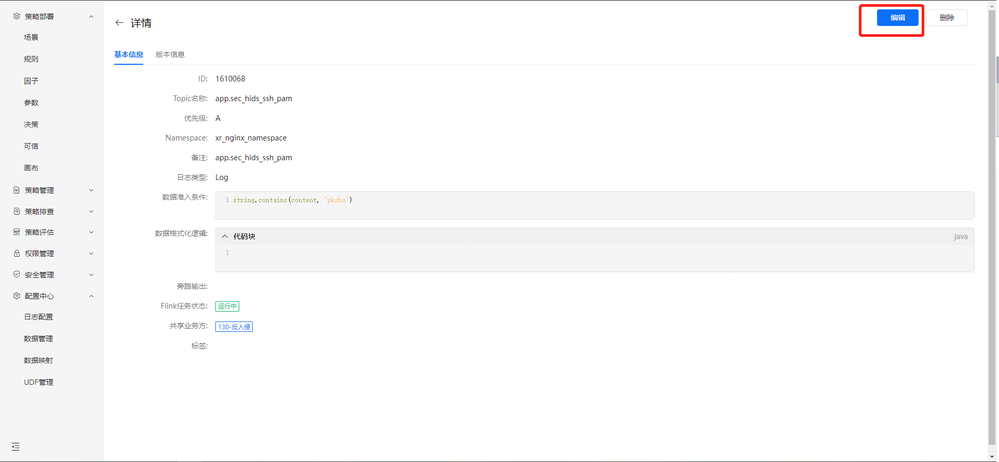 |
|
2. 根据需求调整优先级 注意：只可逐级进行升级，即B级不能直接升级到S级 |
|
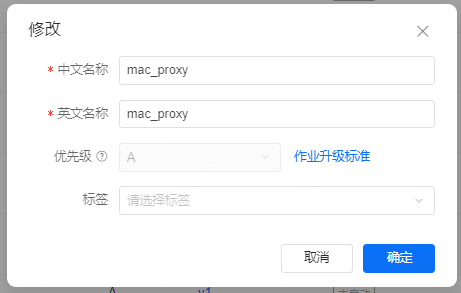 |
|
3.查看作业升级检测结果，确认是否升级 注意：如果和优先级同步修改了其他的内容，比如：中英文名等，但后续升级失败，则同步修改的其他内容无效，需要重新修改提交 |
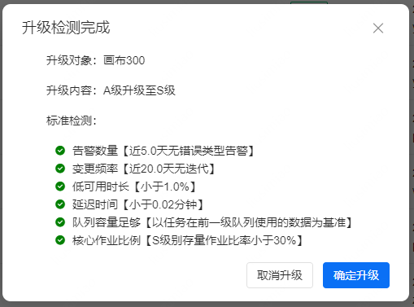 |
|
|
4.确认升级，升级成功，作业重启 |
||


4.2 各优先级作业告警接收
后续告警负责处理人依旧是近线研发同学，业务同学可参考该表格了解告警原因及可能的处理方式
|
告警名称 |
含义 |
告警规则 |
可能原因 |
处理方式 |
告警来源 |
告警接收群【大象群】 |
告警接收人【大象个人、短信】 |
|---|---|---|---|---|---|---|---|
|
平均延迟时间告警 近线告警群样式： 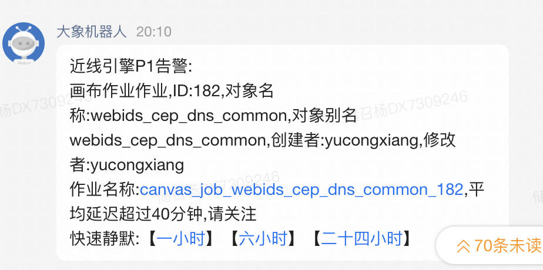 实时计算平台告警样式： 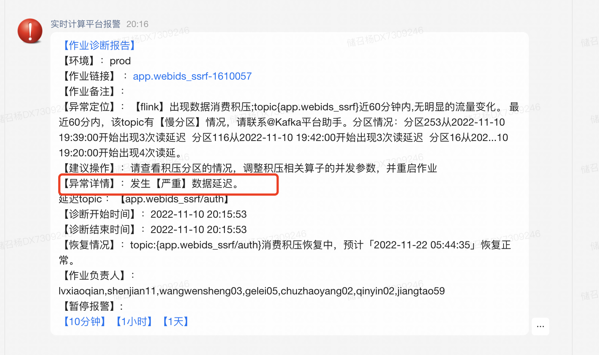 |
作业吞吐下降； 消费能力不足； |
报警规则：平均延迟时间>=10分钟 |
|
可在NAU查看对比作业消费能力变化。
操作方式 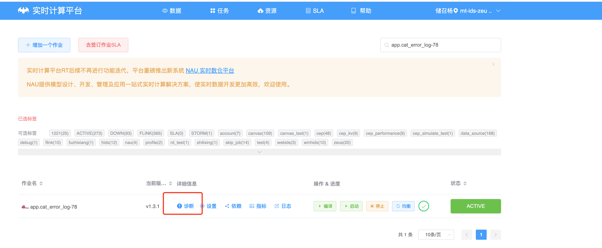 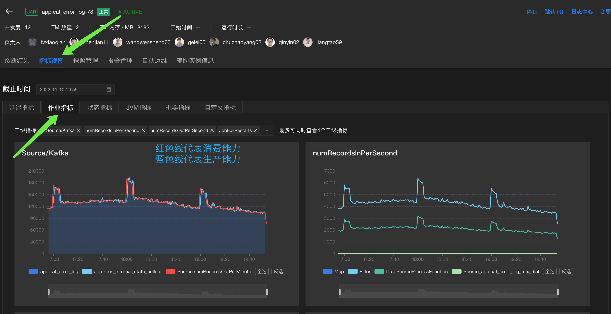 |
近线自身的告警 |
S级作业: 基础安全高优作业运维群 非基础安全高优作业运维群 A级作业： 非基础安全一般运维群 近线引擎告警群 |
复用原来策略，发送给： 作业的创建人和修改人、值班人、近线rd同事 |
|
任务频繁重启告警 任务未正常运行告警 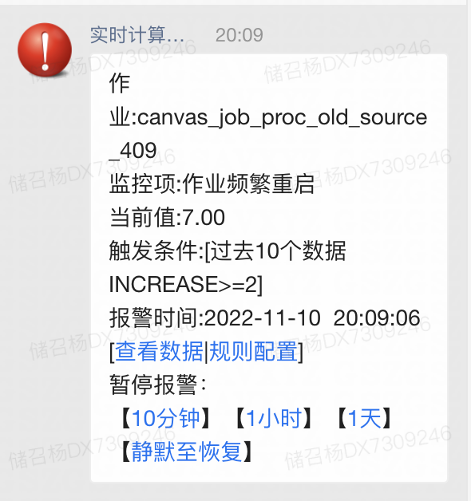 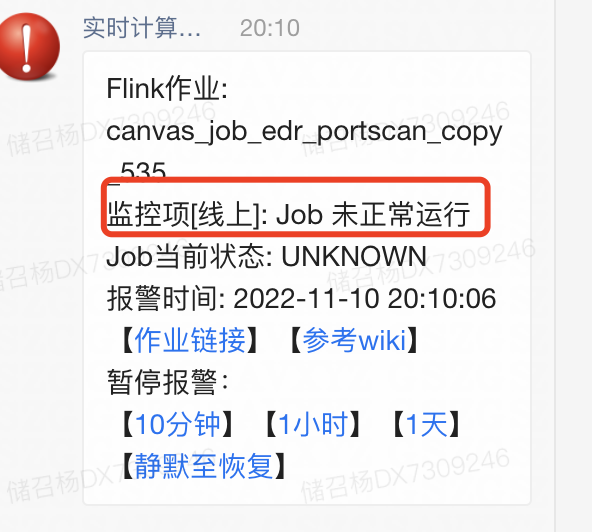 |
作业状态不健康 |
报警规则：过去1个数据增加>0 （过去1个数据是Nau平台概念，语义是一分钟的聚合数据） |
|
可在flink dashbroad 查看作业状态： 不是ACTIVE，RUNNING代表作业存在问题，联系RD 具体操作 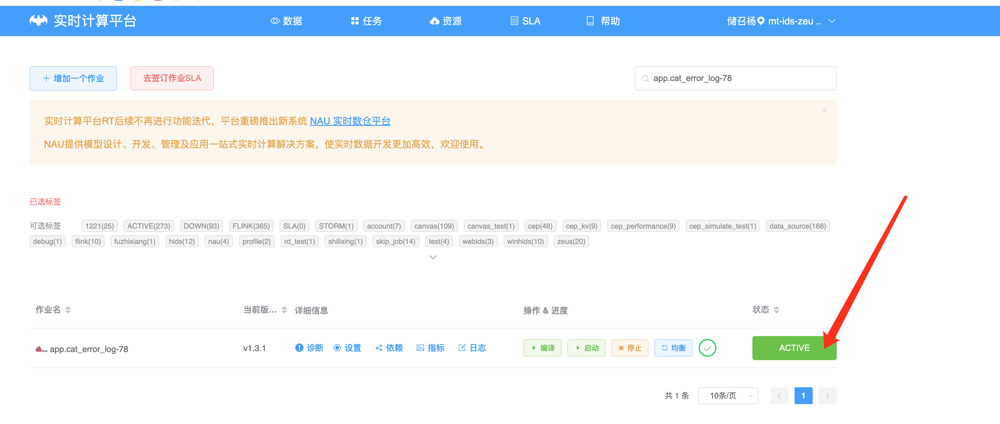 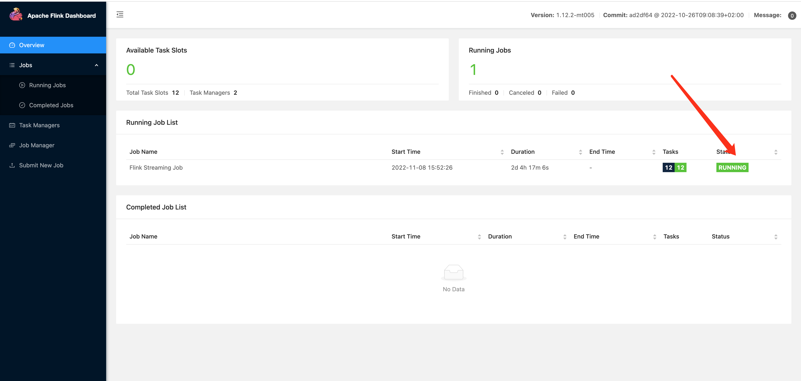 |
NAU告警 |
nau建设中，11.22上线 当前由实时计算平台报警机器人发送 |
接收告警组：zeus近线rd 作业创建人 作业更新人 |
|
checkpoint连续失败 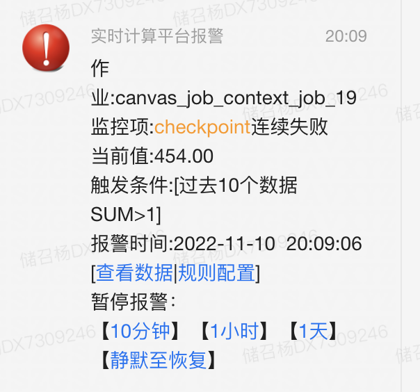 |
checkpoint失败 |
报警规则：过去1个数据增加>0 |
|
联系RD |
接收告警组：zeus近线rd 作业创建人 作业更新人z |
||
|
任务10分钟延迟条数告警 |
作业吞吐下降； 消费能力不足； |
报警规则：过去延迟10分钟的条数>=1万 |
|
同上 |
nau建设中，11.22上线 当前由实时计算平台报警机器人发送 |
接收告警组：zeus近线rdz 作业创建人 作业更新人 |
五、FAQ
-
我如何知道升级的标准是什么？
-
我如何知道我的作业是否符合升级标准？
答：可以直接尝试升级，系统会判断告知是否符合升级标准，不符合的会告知作业现状
-
我的作业不符合升级标准无法升级，我该怎么办？
-
我收到了告警，但不知道该如何处理？
-
我的作业已经升级到S级后，还可能被降级吗？
答：有可能。考虑到研发S级别作业队列的稳定性，会对影响队列稳定的作业进行剔除队列治理，治理完后再放回S级。每周会统一和业务review需要降级的作业，周知业务后研发进行降级处理。具体标准如下：
队列
校验逻辑
标准
数据来源
S级任务
流量波动比较大，超过一直持续增长
t+1判断再降级，数据量波动比较大。30%
指标大盘
最近一周短期内无法恢复告警数量>=2
延迟告警
告警治理表